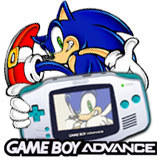
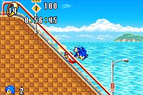
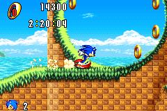
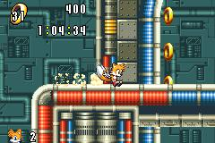
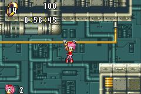

<script language='Javascript'>
function WinOpen(src)
{
	OpenWin = window.open(src, '6B8B4567')
	OpenWin.focus()
}
<!--
	window.open('http://216.179.151.72/stuff_tc/popupbanner.html','6B8B4567','toolbar=no,location=no,directories=no,status=no,menubar=no,scrollbars=no,resizable=no,width=500,height=400');
// -->
</SCRIPT><HTML>
 <HEAD>
  <!-- $MVD$:app("MicroVision WebExpress","770") -->
  <!-- $MVD$:template("","0","0") -->
  <!-- $MVD$:color("18","80ff","Orange","1") -->
  <!-- $MVD$:color("19","ffd6ce","Lavender","1") -->
  <!-- $MVD$:fontset("Untitled Font Set 3","Verdana") -->
  <!-- $MVD$:fontset("Untitled Font Set 2","arial") -->
  <TITLE>Sonic Advance Game Boy Advance Preview</TITLE>
  <META NAME="GENERATOR" CONTENT="MicroVision Development / WebExpress"> 
<bgsound src="" loop="-1"> 
<STYLE>
 
                                      <!--
                                      A:link {color: black ; text-decoration: none;
                                      }
                                      A:visited {color: black; text-decoration: none}
                                      <!--A:hover   {text-decoration: none; color:
                                      black}--><!--A:hover   {text-decoration: underline;
                                      color: black}
input {  font-family: Verdana; font-size: 8pt; color: black; text-decoration: none; background-color: white}
-->
</STYLE>
 </HEAD>
 <BODY background="b.gif" bgproperties="fixed" TEXT="BLACK" LINK="BLACK" VLINK="BLACK" ALINK="BLACK" LEFTMARGIN="0" TOPMARGIN="0" BOTTOMMARGIN="0">

       <div align=center><!-- $MVD$:picsz("577","126") --><a href="main.html"></a></div></TD>
       <table border=0 width="783" align=center><tr><td width=85%><div align=left>       
<font size=2 color=black><b><a href="frame.html"><font color=blue>MENU</a></font> >> Games >> <a href="backcat.html"><font color=blue>The Back Catalogue</a></font><td width=15%><div align=right><font size=2 color=black><b><a href="javascript:history.go(-1)
"><font color=blue>Go Back a Page</a></font></table>
     </TR>
    </TABLE>

    

<FONT FACE="arial"><FONT SIZE="2"><FONT COLOR="LIGHTGREY">
<div align=center><font size=3 color=orange><b>Universal Form!
<table border=0 width=50% align=center><tr><td><div align=center><a href="uniform.html"></a><BR><a href="uniform.html"><font SIZE=2 color=blue><b>Rate this page</a><td><div align=center><a href="uniform.html"></a><br><a href="uniform.html"><font size=2 color=blue><b>Review this game</a>
</table>

<b><font size=6 face="comic sans ms" color=red><div align=center><u>Sonic Advance Preview</u></font></div></font>
<b><font size=3 color="green">*Nintendo Game Boy Advance*</font><br>
<br>
<b><a href="sonadvanceshots.html"><font color=blue>Screenshots</a>

<p>
<font color=black><B>You are listening to: City Escape: Part 1 - John Weeks</font><p>

<font color=#ffc000><div align=center><u><b>Contents</b></div></u>
<a href="#updates"><font size="2"><font color=blue>*Latest Updates*</a><br>
<font size="2"><font color=darkgray>*Latest Screenshots*</a><br>
<font size="2"><font color=darkgray>*Past Sonic Advance News*</a><br>

<br>
<hr width=90%>

<h2><font face="comic sans ms" color=green><a name="updates">*Updates*</a></h2></font>

<font color=green><b>23 June 2001:</b><br><div align=center><font size="2"><font color=black><b>The first Sonic move in Sega's multi-platform conquest, and it's shaping up to be an excellent title. Only given the BETA Screenshot earlier, new screens have been released into the world, and new evidence shows that Nintendo could be very happy with Sonic Team's offering.<p>
With Nintendo bound to succeed anyway with their fantastic new GB Advance, it's only smart that Sega should develop for the handheld. After announcing titles such as Chu Chu Rocket and Puyo Puyo, Sonic has emerged, and, looking at the screenshots, it's pretty damn good. The brill news is, as the screenshots prove, you'll be able to play as Tails and Amy, and Knuckles is said to be playable too. This should increase the playability of the game no end.<p>
No news except for the characters are availiable, such as the story or much else, but check in soon and Dreadknux will fill you in as soon as the rumour mill starts a' churnin'.

</table>
<p><hr width=90%>

<h2><font face="comic sans ms" color=green><a name="shots">*Latest Screenshots*</a></h2></font>

<a href="Update/advance1.jpg">
</a>
<a href="Update/advance2.jpg">
</a>
<a href="Update/advance3.jpg">
</a>
<a href="Update/advance4.jpg">
</a>
<a href="Update/advance5.jpg">
</a>
<a href="Update/advance6.jpg">
</a>


<p>
<div align=center><br>


</BODY>
</HTML>